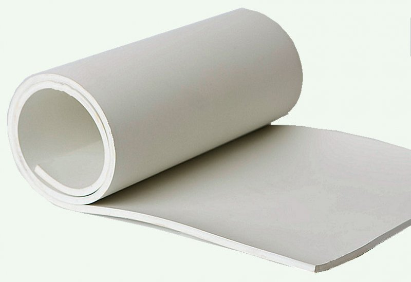

-
ТМКЩ
На любом производстве оборудование нуждается в укреплении опорных неподвижных конструкций, сглаживании вибраций в процессе работы механизмов, предотвращении трения металлических деталей, отбойниках и смягчителях вероятных ударов. -
МБС
Технические пластины МБС производятся в виде листов разной толщины. Так же, как и технические пластины ТМКЩ, технические пластины МБС могут быть резиновыми или резинотканевыми. Изделия изготавливаются в полном соответствии с ГОСТом -
АМС
Основное назначение изделия – прокладочный материал. АМС производят из качественных сортов резины, препятствующей трению неподвижных деталей машин и механизмов. Технические пластины компенсируют ударные нагрузки, используются как уплотнители узлов, работающих под давлением. -
УМ
Резиновые материалы этого типа выпускают для неподвижных соединений и изоляции в электрических устройствах, трансформаторах, распределителях высокого напряжения любого климатического исполнения. Техпластина трансформаторная производится путем вулканизации резины с латексными и каучук содержащими материалами.
Виды техпластин
О продукте:
Назначение:
Наша компания предлагает высококачественные техпластины, которые могут удовлетворить потребности в различных отраслях промышленности. Позвольте нам рассказать о том, почему наши техпластины так важны для вашего производства.
Первое, что необходимо учитывать, это то, что техпластины являются неотъемлемой частью большинства конструкций и оборудования, используемых в промышленности. Они могут использоваться для соединения различных элементов, обеспечивая жесткость и прочность всей конструкции. Без надежных техпластин ваше производство может столкнуться с проблемами, связанными с неустойчивостью конструкции и возможными повреждениями оборудования.
Кроме того, использование наших техпластин может повысить производительность вашего производства, уменьшить риск аварий и снизить затраты на ремонт и замену оборудования. Надежные техпластины обеспечивают долговечность конструкций, что в свою очередь увеличивает их эффективность и продуктивность.
Наша компания предлагает широкий ассортимент техпластин различных размеров и форм, изготовленных из высококачественных материалов. Мы гарантируем качество наших изделий и конкурентные цены. Если вы ищете надежного поставщика техпластин, обратитесь к нам - мы с удовольствием поможем вам решить все ваши потребности в этой области.

АМС
Техпластины АМС изготавливаются 2-х видов:
1 класса - техпластина АМС толщиной от 1,0 до 20,0 мм, предназначена для производства резино-технических изделий, служащих для уплотнения узлов, работающих под давлением свыше 0,1 МПа;
2 класса - техпластина АМС толщиной от 1,0 до 60,0 мм, предназначена для изготовления резино-технических изделий, служащих для уплотнения узлов, работающих под давлением до 0,1 МПа, для предотвращения трения между металлическими поверхностями, а также для восприятия одиночных ударных нагрузок или в качестве подкладок, настилов;
Виды техпластин:
Ф-формовая техпластина АМС, изготовленная методом вулканизации в пресс-формах на вулканизационных прессах;
Н-неформовая (рулонная) техпластина АМС, изготовленная методом вулканизации в котлах, а также на вулканизаторах непрерывного действия.
Типы техпластин:
I-резиновая пластина;
II-резинотканевая пластина.
Степени твердости:
М-мягкая (АМС-М);
С-средняя (АМС-С);
Т-твердая (АМС-Т).
Основные параметры пластины АМС в зависимости от условий эксплуатации:
| Класс | Вид | Тип | Степень твердости | Температурный интервал, ℃ | Рабочая среда |
| 1;2 | Ф; Н | I; II | М | От -30 до +180 | Атмосферный воздух, емкости, помещения, сосуды; азот; инертные газы при давлении от 0,05 до 0,4 Мпа или масла на нефтяной основе при давлении от 0,05 до 10,0 МПА |
| М1 | От -40 до +80 | ||||
| С | От -30 до +80 | ||||
| С1 | От -40 до +80 | ||||
| Т | От -30 до +80 | ||||
| Т1 | От -40 до +80 |
Примеры условного обозначения пластины:
Пластина 1 класса, вида Ф, типа I, марки АМС, степени твердости С, толщиной 10 мм, размером 720х720 мм: Пластина 1Ф-1-АМС-С-10 720х720 мм ГОСТ 7338-90;
Пластина АМС, 2 класса, неформовая, резиновая, степени твердости С1, толщиной 5 мм: Пластина 2Н-1-АМС-С1-5 ГОСТ 7338-90.
Пластина 2 класса, вида Н, типа II, марки АМС, степени твердости С, с одной тканевой прокладкой, толщиной 2 мм: Пластина 2Н-II-АМС-С-1 х 2 ГОСТ 7338-90.

Карточка 2
Описание 2
Дополнительная информация о карточке 2.

Карточка 3
Описание 3
Дополнительная информация о карточке 3.

Карточка 1
Описание 1
Дополнительная информация о карточке 1.

Карточка 2
Описание 2
Дополнительная информация о карточке 2.

Карточка 3
Описание 3
Дополнительная информация о карточке 3.

Карточка 1
Описание 1
Дополнительная информация о карточке 1.

Карточка 2
Описание 2
Дополнительная информация о карточке 2.

Карточка 3
Описание 3
Дополнительная информация о карточке 3.
Карточка 1
Описание 1
Дополнительная информация о карточке 1.
Карточка 2
Описание 2
Дополнительная информация о карточке 2.
Карточка 3
Описание 3
Дополнительная информация о карточке 3.
Общая информация по способе изготовления:
Техпластины (ТМКЩ, МБС, АМС, УМ) могут изготавливаться из различных материалов, таких как сталь, нержавеющая сталь, латунь, алюминий и др. Изготовление техпластин может осуществляться различными способами, в зависимости от используемого материала и требуемых характеристик изделий. Ниже приведены основные способы изготовления техпластин:
Литье - используется для изготовления техпластин из алюминия и других легких сплавов.
Холодная штамповка - применяется для изготовления техпластин из тонколистовой стали и нержавеющей стали.
Горячая штамповка - используется для изготовления техпластин из стальных заготовок большой толщины.
Фрезерование - применяется для изготовления техпластин из латуни и других материалов, которые легко обрабатываются.
Лазерная резка - используется для изготовления техпластин из металлов различной толщины.
Сварка - применяется для соединения нескольких элементов техпластин в одно целое изделие.
Точный способ изготовления техпластин зависит от требований к конечному изделию, материала и размеров деталей.